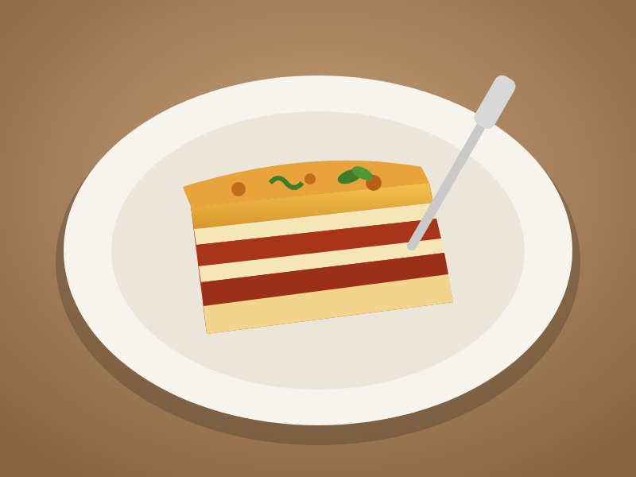

Lasagna

Description
A classic Italian dish made of layers of pasta, rich meat sauce and creamy
béchamel, topped with melted cheese. Perfect for a family dinner on a Sunday.
Ingredients
- 12 lasagna sheets
- 500 g ground beef
- 1 onion
- 2 garlic cloves
- 800 g crushed tomatoes
- 50 g butter
- 50 g flour
- 500 ml milk
- 150 g grated parmesan
- Salt, pepper and nutmeg
Steps
- Chop the onion and garlic, then cook them in a pan with a little olive oil.
- Add the ground beef and cook until browned.
- Pour in the crushed tomatoes, season and let simmer for 30 minutes.
- Melt the butter in a saucepan, add the flour and stir for one minute.
- Slowly whisk in the milk until the béchamel thickens. Season with salt, pepper and nutmeg.
- In a baking dish, alternate layers of meat sauce, lasagna sheets and béchamel.
- Finish with béchamel and parmesan on top.
- Bake at 180°C for 40 minutes and let rest 10 minutes before serving.
Back to recipes